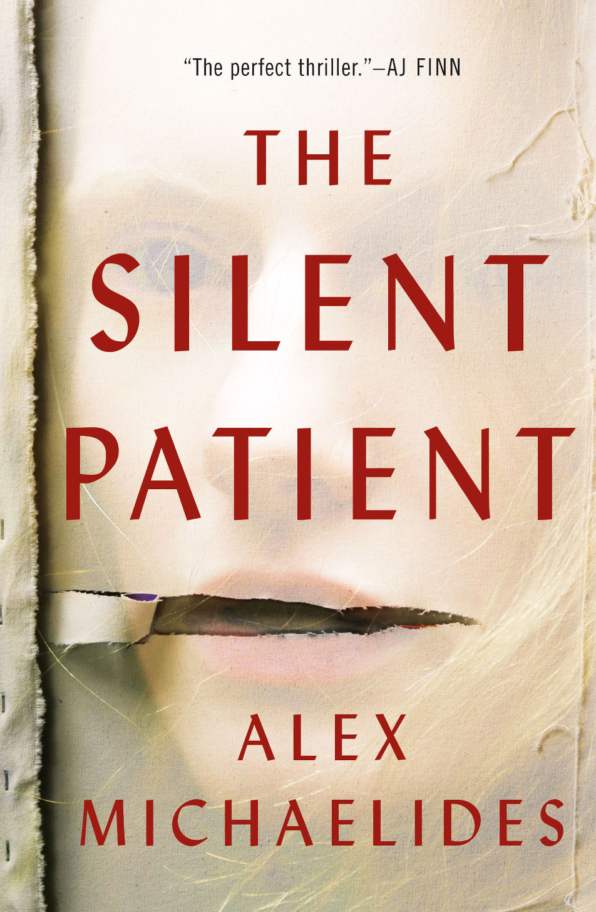

Book Details

Title: The Silent Patient
Author: Alex Michaelides
Published: 2019
Category: Mystrey Thriller
Status: Available
Description:
Alicia Berenson’s life is seemingly perfect. A famous painter married to an in-demand fashion photographer, she lives in a grand house with big windows overlooking a park in one of London’s most desirable areas. One evening her husband Gabriel returns home late from a fashion shoot, and Alicia shoots him five times in the face, and then never speaks another word.